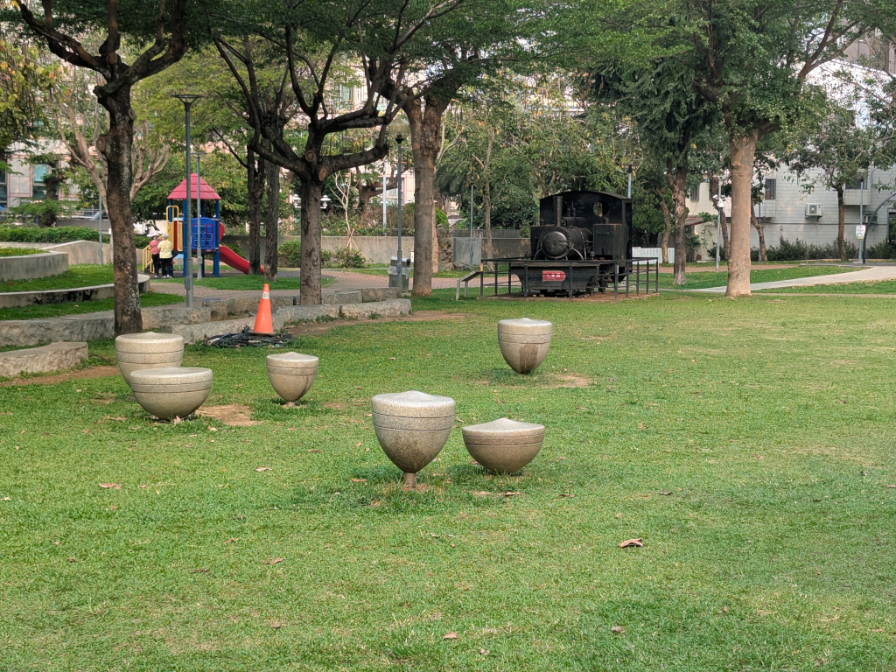
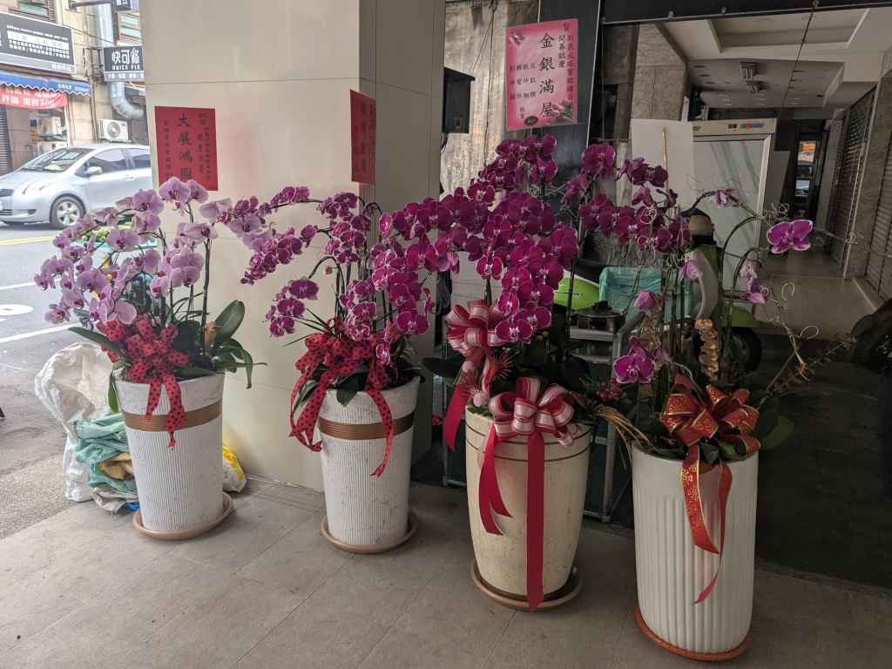
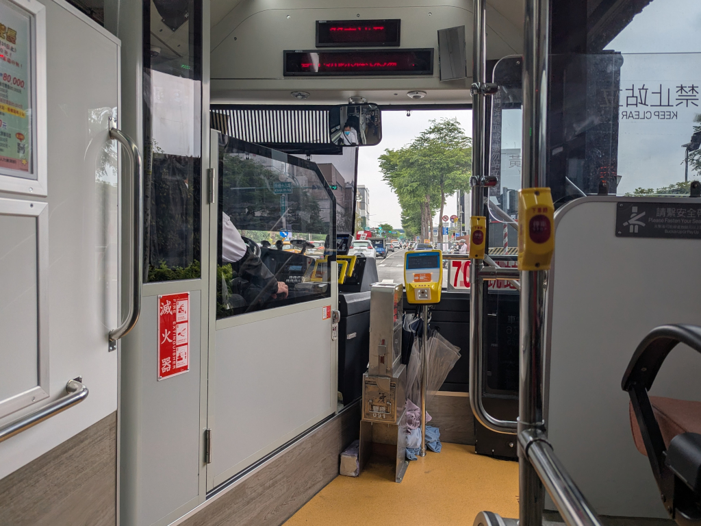
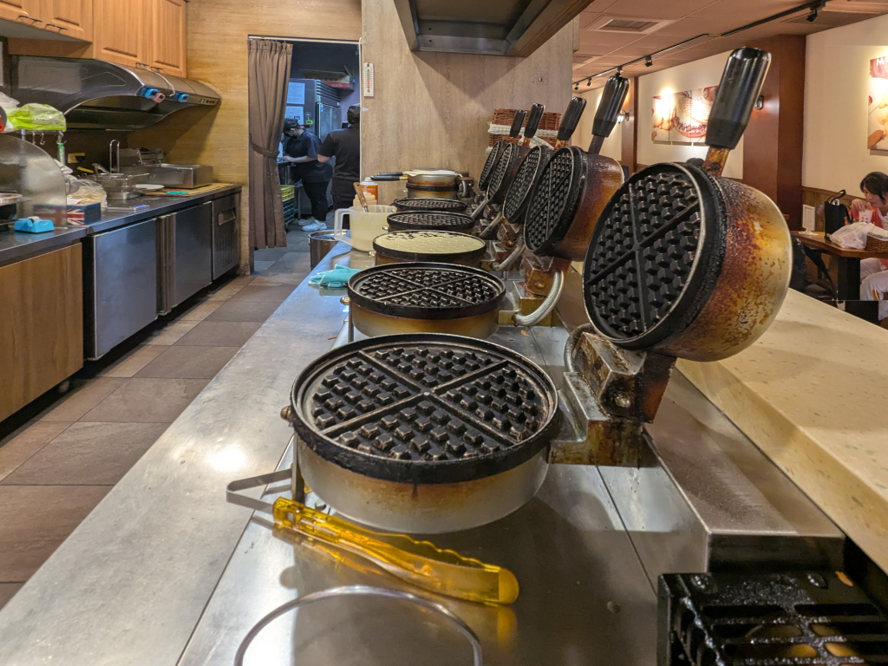
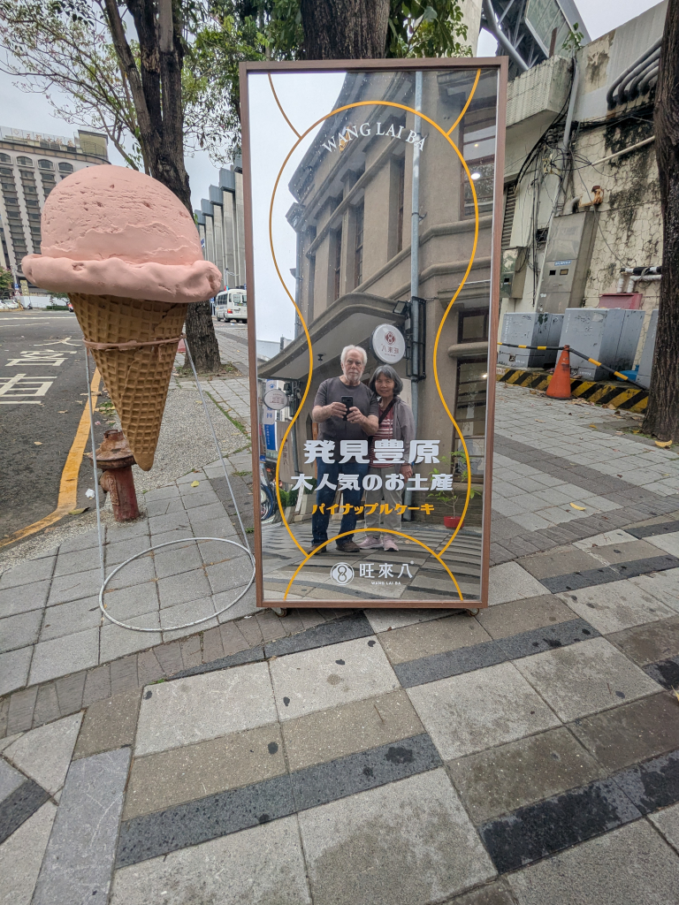
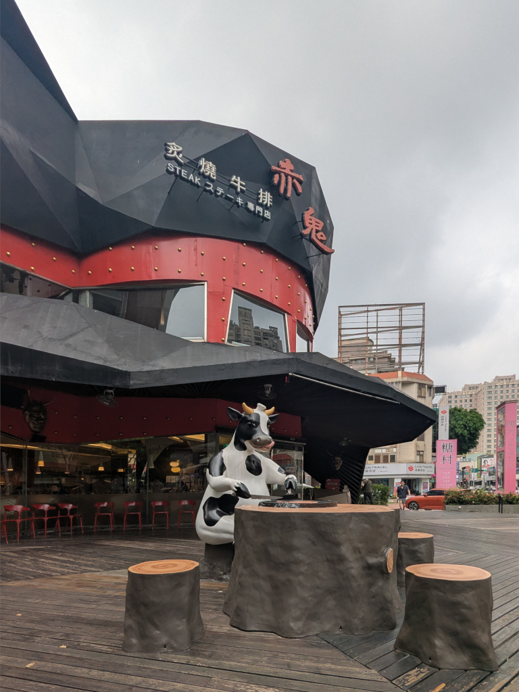
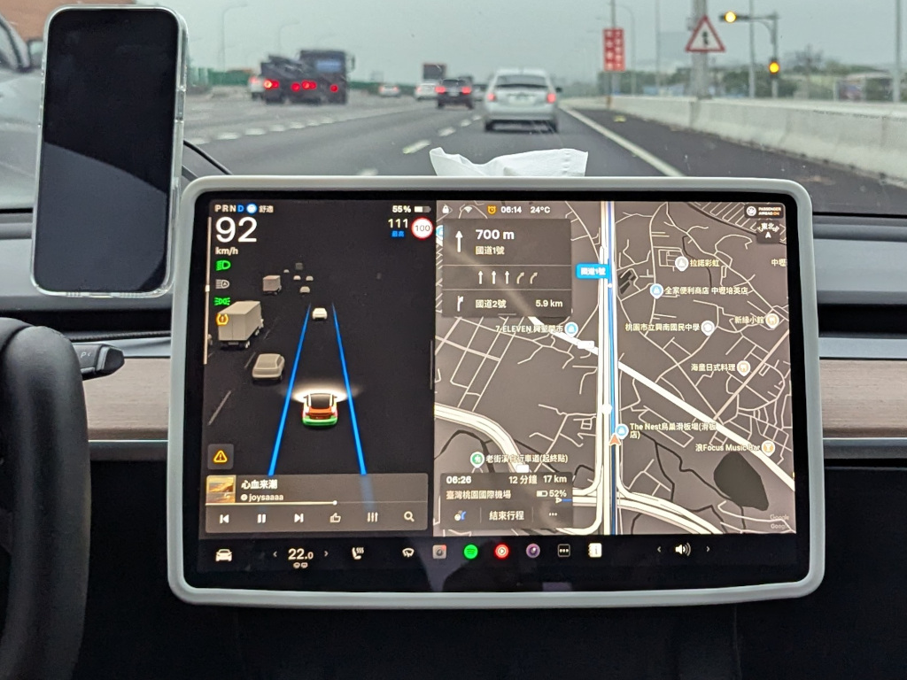
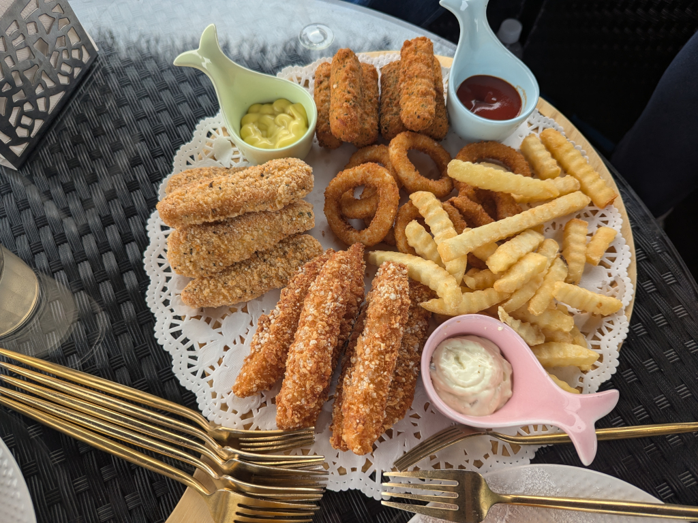

Miscellaneous Pictures
Main | Previous 1 2 3 4 5 6 7 8 Next

In 民俗公園 (the Folklore Park) behind our hotel, there are these little top statues, along with this big statue of a muscle-bound top thrower. Throwing tops used to be a form of fun and entertainment in Taiwan, probably not so much nowadays.{kind=link}

Growing orchids is very popular in Taiwan. The climate is well-suited for them. These look like they're gifts wishing someone's new business good luck and prosperity: 金银满屋 ("May you have a house full of gold and silver"), 大展鴻圖 ("May your ambitions soar"), and 駿業宏開 ("May your business flourish").
Looking out the big empty bus' front window as we headed to 豐原 (Fengyuan) one day.{kind=link}

The waffle irons in 小木屋鬆餅 (Shine Mood Waffle) in Fengyuan, where, I guess, being a waffle restaurant, much of their food preparation occurs.{kind=link}

Outside of 旺來八 in Fengyuan, we took a quick selfie in their mirror. That's Japanese writing on the mirror:| 発見豐原 | Discover Fengyuan |
| 木人気のお土産 | Popular Wooden Souvenirs |
| パイナップルケーキ | Pineapple Cakes |

Walking down 崇德路, we passed this steakhouse with its "cow eating cow" out front. I remember this from many years ago, having walked past it often during past visits.
Our ride to the Taoyuan Airport on our day of departure was in a Tesla with this very impressive screen. 92 km/h (in this 100 km/h zone) translates to about 57 mph, and the 24° C temperature is about 75° F. The 3-D rendering of the traffic surrounding the car was pretty interesting to watch.
A close look at the 綜合拼盤-大 (Mixed Platter - Large) that Zhiwei ordered at 映象水岸, a small coffee house we visited near 三義 (Sanyi). Lots of good deep-fried stuff! (Most of it went uneaten. Zhiwei took the leftovers home for later.) And here's a closer look at the waffle plate and Meihui's tea that we also ordered.{kind=link}
{kind=link}